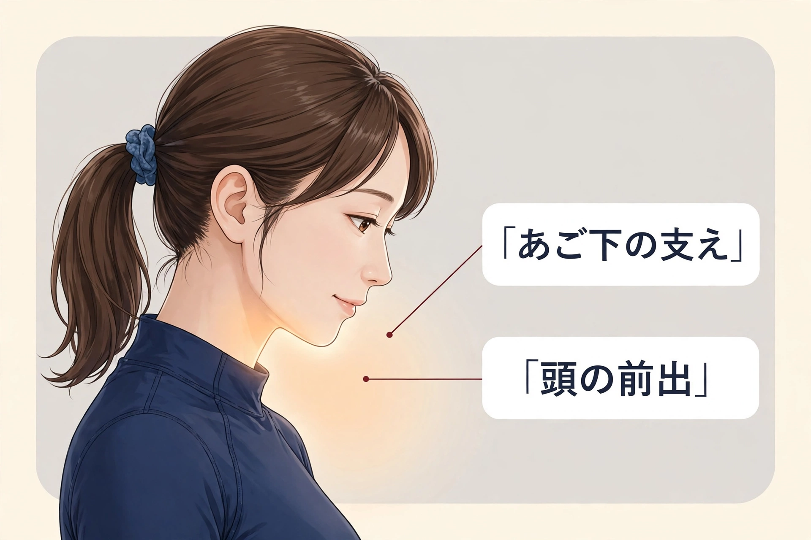

二重あご
美容整体ステラ・ポラリス東三国｜大阪市淀川区東三国・東三国駅徒歩5分・女性向け

あご下のラインを整えて、横顔すっきりの印象へ
体重は変わっていないのに、あごの下のラインがもたついて見える、下を向いたときに二重あごが気になる——二重あごは、太ったことだけが理由ではなく、姿勢やあご下の筋肉の使い方、むくみが重なって目立つと言われています。とくにスマートフォンを見る姿勢で頭が前に出る時間が長いと、あご下が縮んだ状態がクセになり、ラインがぼやけやすくなります。このページでは、二重あごの背景にある仕組みと、あご下と姿勢の土台から整えて、横顔がすっきり見える印象を目指す当サロンでのケア、ご自宅でできるセルフケアをご案内します。まずは下のチェックで、ご自身の状態を確かめてみてください。鏡よりも、写真や動画に写った横顔で気づく方が多いのも、このお悩みの特徴です。
ご予約はこちら（Coubic）こんなお悩みありませんか
- 下を向くと、あごの下のラインが二重になって見える
- 横顔の写真で、あごと首の境目がぼやけている
- 体重は変わらないのに、あご下だけもたつく気がする
- スマートフォンを見る時間が長く、うつむき姿勢が多い
- 朝より夕方のほうが、あご下が重く感じる
- あごの下を触ると、ふっくらして張りがない感じがする
- 姿勢を正すと、あご下のラインが少しすっきり見える
当てはまる項目が多いほど、頭の前出の姿勢と、あご下の筋肉の弱り、むくみの影響が重なっている目安とされています。二重あごは、あご下だけでなく姿勢全体とつながっています。次のセルフチェックで、あご下の状態の傾向を確かめてみましょう。
簡単セルフチェック（あご下ラインのチェック）
鏡の前に座って、あご下のラインを確かめる簡単な方法です。
- 鏡の前で背筋を伸ばし、あごを軽く引いて横顔のラインを見ます。
- 次に、スマートフォンを見るいつもの姿勢になり、あご下のラインがどう変わるかを確認します。
- 姿勢によってラインの出方が大きく変わる場合は、頭の位置とあご下の筋肉の影響が大きい目安と言われています。
※これは診断ではありません。ご自身の状態の傾向を知る目安としてお使いください。
二重あごの原因と仕組み
あご下を支える筋肉と舌の位置
あごの下には、舌を支える筋肉群があり、口を閉じたときに舌が上あごについている状態が、あご下のラインを保つ土台になると言われています。口が開きやすく舌の位置が下がると、あご下がゆるんで下がって見えやすくなります。図1のように、あご下の支えが弱くなると、脂肪の量が変わらなくてもラインがもたついて見えることがあります。舌の位置は無意識の習慣なので、気づいて整えることが第一歩になります。

図1 頭の位置とあご下のラインの関係、頭が軸の上にのってあご下が伸びた状態のイメージ。体の状態には個人差があります。施術では、この仕組みを踏まえてケアを組み立てます。
頭の前出とあご下の縮み
うつむき姿勢で頭が前に出ると、あご下から首の前側は縮んだ状態が続きます。縮んだ状態がクセになると、その姿勢のままラインが固定されて見えやすくなります。反対に、頭が軸の上にのる姿勢では、あご下が自然に伸びてラインがすっきり見えます。姿勢とあご下は、切っても切れない関係です。姿勢が変わると、あご下の見え方もその場で変わって見えることがあります。
むくみと巡りの影響
あご下や首まわりは、顔の余分な水分が集まりやすい場所でもあります。首や鎖骨まわりの巡りが滞ると、夕方にかけてあご下が重く、ラインがぼやけて見えることがあります。朝はすっきりしているのに夕方に目立つ方は、姿勢に加えてむくみの影響も重なっている目安になります。首まわりの緊張をゆるめることは、巡りを助ける土台づくりにもつながります。
体重変化だけではない背景
もちろん、体重の増加であご下に脂肪がつくこともあります。ただ、体重が変わらなくても目立つ場合は、姿勢・筋肉・むくみという条件の重なりが中心と考えられます。あご下だけをどうにかしようとするより、頭の位置と首まわりの巡りを含めた土台から見直すことが、ラインを保つ近道になります。条件ごとに少しずつ見直していくことが、ラインを保つ近道になります。
セルフケアで足りる場合・サロンケアが向く場合
あご下のもたつきが軽く、姿勢を正すとラインがすっきり見える日が多い場合は、まずご自宅でのセルフケアと姿勢の見直しを続けて様子を見る方法があります。一方で、どの姿勢でもラインがぼやける、首・肩のこわばりが強く頭の位置が戻しにくい、むくみが抜けにくいという場合は、サロンでのケアが向いている目安になります。サロンでは、あご下のケアと姿勢の土台づくりを組み合わせて、施術後に「横顔がすっきり見える」「あご下が軽い」と感じやすい状態を目指します。どちらが正解というものではなく、今の状態に合わせて選ぶことが大切です。
当サロンでのケア
当サロンの二重あごケアは、「あご下のラインがすっきりして、横顔の印象が整う」ことを目指す組み立てです。まず頭の位置と首まわりの状態、あご下の様子を一緒に確認し、部位と目的に合わせて3つの手技を組み合わせます。
美容整体：頭の位置と背骨のラインを整え、あご下が縮む姿勢のクセをゆるめる土台をつくることを目的に。首の前側が伸びやすい姿勢の感覚を取り戻すお手伝いをします。
アロマオイルマッサージ：あご下から首、デコルテまでをオイルでやさしくゆるめ、巡りが流れやすい状態を目指します。むくみが抜けて、ラインがすっきり見える感覚につながるケアです。
もみほぐし：首の付け根や肩、頭皮など、あご下とつながる部位のこわばりをほぐし、頭の位置が戻りやすい状態を目指して進めます。
ケアを通して目指すのは、こんな変化です。
- あご下のラインがすっきりして、横顔の印象が整う状態へ
- 頭が軸の上にのり、あご下が自然に伸びる姿勢へ
- 夕方のあご下の重さやむくみが、感じにくい状態へ
- 首・肩のこわばりがゆるみ、うつむき姿勢が戻しやすい状態へ
- 舌の位置や口の閉じ方など、日常のクセに気づくきっかけへ
施術の仕上げには、ご自宅で続けやすいあご下の体操や、スマートフォンを見るときの姿勢のポイントもお伝えします。あご下が伸びる感覚を知ることが、日常の姿勢を見直すきっかけになります。強さは途中でも調整できますので、遠慮なくお声がけください。

施術の流れ
ご来店後、気になる部位やお悩み、ご希望の強さなどをうかがいます。完全個室のため、周りを気にせずお話しいただけます。
頭の位置や首の動き、あご下の様子などを一緒に確認し、その日の状態に合わせた施術の進め方をご案内します。気になる点があれば、その場で一緒に確認します。
美容整体を中心に、ご希望に応じてアロマオイルマッサージ、もみほぐしを組み合わせて進めます。強さは途中でも調整できます。
施術後の状態を確認し、ご自宅で続けやすいセルフケアのポイントをお伝えします。次回の目安についても、ご希望があればご案内します。
料金
| コース | 通常価格 | キャンペーン価格（12/25まで） |
|---|---|---|
| 80分 | 8,000円 | 3,000円 |
| 100分 | 10,000円 | 4,000円 |
| 120分 | 12,000円 | 5,000円 |
クリスマスキャンペーンは12月25日まで、ご新規様もリピーターの方も対象です。施術内容は当日の状態とご希望に合わせて組み立てます。
ご自宅でできるセルフケア
- あご引き体操：背筋を伸ばし、あごを水平に引いて二重あごをつくるようにし、5秒キープしてゆるめます。あご下の筋肉を使う体操を5回が目安です。
- 舌回し体操：口を閉じたまま、舌先で歯ぐきをなぞるように大きく10回まわし、反対も10回。あご下の支えを意識して行ってください。
- 首の前側ストレッチ：鎖骨の下に手を当て、顔をゆっくり上に向けて首の前を伸ばします。左右15〜20秒、痛みのない範囲で行います。
- 画面の高さの工夫：スマートフォンは目の高さに近づけて見る、長時間のうつむき姿勢を小分けにするなど、姿勢そのものの見直しも大切です。
ご自宅でのケアに：セルフケア資料ライブラリ（無料）
このお悩みに合わせたセルフケアの考え方を、無料の資料ライブラリでご紹介しています。
セルフケア資料ライブラリを開く →
受診の目安
あごの下のしこりが急に大きくなる、飲み込みにくさや声の変化を伴う場合や、片側だけが急に腫れてきた場合は、施術の前に医療機関への受診をおすすめします。気になる変化が続く場合も、まずは医療機関でご相談ください。ご不安な点があるときは、無理に施術を進めず、受診を優先してください。
よくある質問
Q. 初めてでも大丈夫ですか？
はい。当サロンは完全予約制・完全個室で、1日3組までのご案内です。最初にカウンセリングで頭の位置やあご下の様子をうかがい、無理のない内容から始めます。施術の前後で「あご下がすっきり見える」「首が伸びた感じがする」といった感覚の違いを一緒に確認しながら進めますので、初めての方も安心してご利用いただけます。
Q. 顔や首の施術は痛いですか？
あご下や首まわりは繊細な部位のため、やさしい圧を基本に進めます。首の付け根や肩など、こわばりの強いポイントは状態に合わせて丁寧にほぐします。感じ方には個人差がありますので、施術中も遠慮なくお声がけください。施術中に力加減が気になるときは、その場でお声がけいただければすぐに調整します。
Q. コースはどう選べばいいですか？
80分・100分・120分のコースがあり、ケアしたい部位の広さやお時間のご都合に合わせて選べます。あご下に加えて、土台となる首・肩・背中までゆっくり整えたい方には、100分が選ばれることが多いコースです。迷われる場合は、ご予約の際にお気軽にご相談ください。
Q. 場所と予約方法を教えてください。
大阪市淀川区東三国、東三国駅から徒歩5分です。完全予約制のため、予約サイト（Coubic）またはLINE公式アカウントからご予約をお願いしています。
Q. 男性も受けられますか？
当サロンは女性向けのため、男性の方は、同じ東三国の男性専用整体院「北辰堂」をご案内しています。
施術者について
平賀建人（施術歴30年）
鍼灸師・登録販売者・アロマセラピスト・パーソナルトレーナーの資格を持ち、美容整体を中心に、アロマオイルマッサージ、もみほぐしを、その日の状態とご希望に合わせて組み合わせて施術します。このページの内容は、施術者の知識と経験をもとに作成しています。

料金・ご予約
ご新規様もリピーターの方も 12/25まで
80分 3,000円／100分 4,000円／120分 5,000円
通常価格は80分8,000円／100分10,000円／120分12,000円です。施術内容はご希望に合わせて組み立てます。
営業時間：月〜土 17:00〜23:00／日 10:00〜23:00（完全予約制）｜電話：080-2468-3086
大阪府大阪市淀川区東三国2丁目25番4号101（東三国駅徒歩5分）
専門解説で詳しく見る
仕組みから詳しく知りたい方は、専門解説シリーズのこちらの記事もあわせてご覧ください。